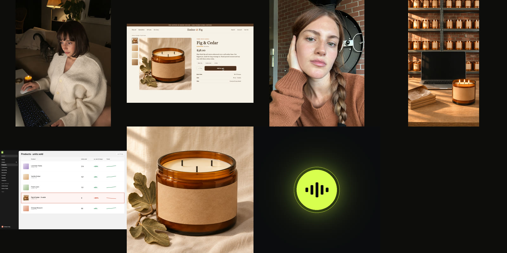

Guess Not
At night she adds Fig & Cedar to her cart (ka-ching), but the page never says if it's safe for her cat, so she closes the tab. Next morning, in The Dip's sunlit studio, the owner reads that silence as "nobody wants it" and is about to kill her favourite candle. Then Scout's orb rises out of the flame: "Don't guess. Ask your shoppers."
- Why this technique fits: this is the guide's basic recipe and nothing else: asset referencing, a one-sentence summary, a timestamped plot, additional notes (Prompt guide, §Basic prompting techniques). The story is simple cause and effect (one shopper, one owner, one product), so it doesn't need a storyboard. The guide warns that storyboards "constrain the model's creative output" (§Multi-panel storyboards), and Emile asked on Nov 13 to let Seedance choose where it can.
- The cast lives in the images, the camera lives in the words. Each shot gets a
[shot size, angle, movement]bracket, as in the guide's line-art example. Specific moves get a plain explanation next to the name (§Camera language: "convert them into [term + descriptive explanation]"). The flip gets its trigger time and method (§Camera language, transitions). - Upload order follows the order people first appear on screen (renumbered Nov 15): the shopper's face, her screen, her room, the cat, the owner, the studio, the owner's screen, the jar, Scout's orb, so @Image1 is the first actor. The guide's fix for characters swapping is to "upload reference assets in the order in which the subjects first appear" (FAQ, §Incorrect character-to-reference mapping).
Input
One pass is enough for this technique: 90 credits. The 720p final reuses the draft's job ID (tutorial, §Draft mode). Spend on this card (H224): 0 credits. Inherited from H216, the card this brief came from: 0.50 credits for 2 GPT Image 2.6 stills (Higgsfield ledger, 17:39–18:04 ET on Nov 14, before H224 was filed at 18:18 ET). The round-2 orb crop was cut locally from the logo file and uploaded for free. No video was generated (job.json: submitted false).
Reference assets (in upload order)


Not uploaded as a file: the ka-ching. Following Emile's Nov 14 rule, it is written as a <ka-ching> sound in the 0–3 s shot only, on the first notification (her "Added to cart" banner), and never on the orb. There is no second ka-ching, because no full-price order happens in this story. Also not uploaded: The Dip's rhythm clip and the camera-preset videos (this technique carries the camera in words only). Because none of them are uploaded, the prompt has no 【Unused Assets】 line (sd25-pe principle 3 applies only to assets that are actually supplied).
The prompt to send: the sd25-pe compile
【Generation Goal】
Generate a live-action story film, warm and in close framing. Please note that this is not video editing. At night a shopper at home adds a candle to her cart, wonders if it is safe for her cat, finds no answer and leaves; next morning the candle's maker reads the low sales as nobody wanting it, until Scout's orb tells her not to guess.
【Reference Asset Roles】
The shopper maps to @Image1; use only her face, dark bob with bangs and cream knit cardigan; do not use the background.
The shopper's laptop screen references @Image2: the Ember & Fig product page. Copy its text exactly; it appears only on her laptop screen.
The shopper's night living room references @Image3; use only its sofa, floor lamp, white side table with the small lit amber candle and white mouse, and the warm lamp light; do not use the woman, the cat or the laptop screen in it.
The grey tabby cat maps to @Image4; use only the cat; do not use the sofa or the sleeve at the edge.
The owner maps to @Image5; use only her face, auburn side braid and rust knit sweater; do not use her pose or background.
The owner's candle studio references @Image6; use only its shelves of amber jars, brick wall, wooden packing table, laptop and sunlight; do not use its dark laptop screen or the lit jar on the table.
The owner's laptop screen references @Image7: the Shopify admin. Copy its text exactly; it appears only on her laptop screen.
The Fig & Cedar jar maps to @Image8; use only the wide amber jar, blank kraft label and three wicks; do not use the leaves or cloth.
Scout's orb maps to @Image9; use only its round lime disc, five dark sound bars and thin ring; do not use its dark background.
Scout's end screen maps to @Video1; use only its picture in 25-30s: the Scout wordmark whose "o" is the orb and all the text under it; do not use its sound, and show none of it before 25s.
@Audio1 is used only for the shopper's voice timbre, pace and soft tone; do not use its words.
@Audio2 is used only for the owner's voice timbre, warmth and pace; do not use its words.
@Audio3 is used only for Scout's calm female voice timbre.
【Subjects and Relationships】
There is one shopper (@Image1), one grey tabby cat (@Image4), one owner (@Image5), one Fig & Cedar jar (@Image8) and one Scout. The shopper and her cat stay in her night living room (@Image3): she sits on the sofa, her laptop, white mouse and small candle on the white side table in front of her. The owner stays in her sunlit studio (@Image6), behind the packing table with her laptop on it. The two women never meet. Scout's orb (@Image9) first appears at 20s and is the same orb that becomes the "o" of the end screen (@Video1).
【Event Script】
0-3s: [Opening shot. Macro close-up, high angle, slow push in] The shopper's (@Image1) hand on the white mouse clicks "Add to cart" on her laptop screen (@Image2) <click>; a small "Added to cart" notification slides in at the top of the screen <ka-ching>. Her small candle in the living room (@Image3) flickers beside it. The shopper (@Image1), in English, in the voice of @Audio1 (V.O., pleased, lips closed): {Okay. Fig and Cedar. This one.} At the end, the notification is on her screen.
3-5s: [Hard cut. Close-up, eye level, static] The shopper (@Image1) on her sofa in the living room (@Image3), her face lit by the screen, lips closed. Behind her the grey tabby cat (@Image4) walks along the back of the sofa; she glances back at it. <a soft cat trill> At the end, her eyes are on the cat.
5-8s: [Hard cut. Medium close-up across the laptop lid, slow push in] The shopper (@Image1) stops her hand on the mouse and scrolls the product page (@Image2), brows tightening, lips closed. The shopper (@Image1), in English, in the voice of @Audio1 (V.O., worried): {Hmm. Is this one safe for my cat?} At the end, the page shows its description with no word about pets.
8-10s: [Hard cut. Eyes in: extreme close-up on the shopper's (@Image1) eyes, eye level, static, screen glow sliding across them] Her lips stay closed. The shopper (@Image1), in English, in the voice of @Audio1 (V.O., quiet, let down): {It doesn't say anywhere.} At the end, her eyes drop from the screen.
10-12s: [Hard cut. Macro close-up, high angle, static on the mouse and screen] The shopper's (@Image1) hand clicks <click>; the product page (@Image2) closes to a blank tab; the candle flame in her living room (@Image3) bends. The shopper (@Image1), in English, in the voice of @Audio1 (V.O., small shrug): {Guess not.} At the end, her screen shows only the blank tab.
12-14s: [High flip, the only non-cut transition: close-up to overhead, crane up and 180-degree roll, landing eye level] The camera rises above the shopper (@Image1) on her sofa in the living room (@Image3), rolls overhead in one move <whoosh> and lands right side up in the owner's sunlit studio (@Image6), the next morning. At the end, the camera is level in the studio.
14-17s: [Lands from the High flip. Close-up, eye level, slow push in] The owner (@Image5) at her packing table in the studio (@Image6), one hand turning the lit Fig & Cedar jar (@Image8), eyes on her laptop screen (@Image7). The owner (@Image5), in English, in the voice of @Audio2 (on camera, puzzled, warm): {Huh. Thought Fig and Cedar would sell way more.} At the end, the jar stands lit on the table under her hand.
17-20s: [Hard cut. Close-up, slight low angle, static] The owner (@Image5) lifts the Fig & Cedar jar (@Image8) in both hands with a sad half-smile, then glances into the lens. The owner (@Image5), in English, in the voice of @Audio2 (dry, resigned, to camera): {My favourite, too. Guess I'm discontinuing it.} At the end, the jar is in both her hands.
20-22s: [Hard cut. Macro on the flames, eye level, slow pull back] The three flames of the Fig & Cedar jar (@Image8) merge into Scout's glowing lime orb (@Image9), which rises between the owner (@Image5) and her laptop. (the music bed swells softly) At the end, the orb hangs in the air and the jar's three wicks are out.
22-25s: [Hard cut. Close-up, eye level, static] Scout's orb (@Image9) hovers beside the owner's (@Image5) shoulder; she stops, eyebrows up, mouth naturally closed while listening. Scout, in English, in the voice of @Audio3 (from the orb, calm, friendly): {Don't guess. Ask your shoppers.} At the end, she is looking at the orb.
25-30s: [Orb becomes the "o": push in on the orb, then locked off on the end screen] Scout's orb (@Image9) flies into the lens and becomes the "o" of the Scout wordmark on the end screen (@Video1). Scout, in English, in the voice of @Audio3 (off screen, calm): {Scout interviews your shoppers for you. Get free early access.} (music lifts and resolves) At the end, the end screen (@Video1) holds still.
【Maintain Consistency】
Hard cuts except the High flip at 12s and the orb becoming the "o" at 25s; a new visual every 2-3 seconds; smooth, stabilized camera. Each line finishes inside its shot. Exactly three voices: the shopper (@Audio1) only as a close-mic inner voice with her lips always closed; the owner (@Audio2) on camera with lip sync; Scout (@Audio3) only from the orb and the end screen. The shopper's room stays dark and quiet, the cat in the background; the owner's studio is bright and sunlit, her look identical. One Fig & Cedar jar in the owner's hands, one orb. One ka-ching only, on the cart notification at 0-3s; the orb makes no chime or ka-ching. On-screen text only on the two laptop screens and the end screen. (A soft, warm lo-fi music bed, very low under the voices.) No subtitles appear on screen.
What we hear, top to bottom (51 words)
Shopper (thinking): Okay. Fig and Cedar. This one. … Hmm. Is this one safe for my cat? … It doesn't say anywhere. … Guess not.
Owner: Huh. Thought Fig and Cedar would sell way more. … My favourite, too. Guess I'm discontinuing it.
Scout: Don't guess. Ask your shoppers. … Scout interviews your shoppers for you. Get free early access.
"Guess" ties it together: the shopper's "Guess not", the owner's "Guess I'm discontinuing it", Scout's "Don't guess". No line is over 3 spoken words per second of its shot (H217 pace check). At 51 words this sits just under the 55–70 brief, on purpose: the round-1 judge flagged the 8–10 s line as too long for its shot, so it lost 3 words. "My favourite, too." is an added beat, kept because it gives her a reason to care and sets up her glance to the lens.
Shot list
| Time | Shot size | Angle | Movement | Transition | Sound | Line | Inspiration |
|---|---|---|---|---|---|---|---|
| 0–3 s | Macro close-up | High angle | Slow push in | Opens on the hand (no wide) | <click>, then <ka-ching> on the "Added to cart" notification (the only ka-ching), low music | Shopper V.O.: "Okay. Fig and Cedar. This one." |  Illustration, not sent to SeedanceThe Dip's macro opening (phone): same closeness, here on the mouse Illustration, not sent to SeedanceThe Dip's macro opening (phone): same closeness, here on the mouse |
| 3–5 s | Close-up | Eye level | Static | Hard cut | <soft cat trill> | (none; the cat sets up the worry) | sd25-pe: "show the trigger clearly before showing the character's reaction" |
| 5–8 s | Medium close-up | Across the laptop lid | Slow push in | Hard cut | Scroll ticks | "Hmm. Is this one safe for my cat?" | The Dip 2.8 s push into the screen |
| 8–10 s | Extreme close-up (eyes) | Eye level | Static, screen glow slides | Hard cut | Room tone | "It doesn't say anywhere." (4 words in 2 s) |  Illustration, not sent to SeedanceHiggsfield "Eyes in" (a5e06af0): the eye framing only, not the dive Illustration, not sent to SeedanceHiggsfield "Eyes in" (a5e06af0): the eye framing only, not the dive |
| 10–12 s | Macro close-up | High angle | Static | Hard cut | <click>, the page closes to a blank tab | "Guess not." | The Dip's macro language |
| 12–14 s | Close-up to overhead | Rises to top-down, lands eye level | Crane up and 180-degree roll (the High flip, written out in words) | The one non-cut transition (at 12 s) | <whoosh>, music lifts | (none) |  Illustration, not sent to SeedanceHiggsfield "High flip" (93a606f8): "rises above the subject and flips overhead, revealing a new character and location" Illustration, not sent to SeedanceHiggsfield "High flip" (93a606f8): "rises above the subject and flips overhead, revealing a new character and location" |
| 14–17 s | Close-up | Eye level | Slow push in | Lands from the flip | Morning studio tone | Owner: "Huh. Thought Fig and Cedar would sell way more." | The Dip 23 s punch-in to her beside the jar |
| 17–20 s | Close-up | Slight low angle | Static | Hard cut | Glass on wood | "My favourite, too. Guess I'm discontinuing it." She glances into the lens on the last line. | The Dip 19 s: she holds the jar in both hands; The Dip's owner plays to camera |
| 20–22 s | Macro on the flames | Eye level | Slow pull back | Hard cut in | (music bed swells softly); no chime, nothing on the orb | (none: the flames become the orb) | The Dip 25.5 s: three flames bloom into the orb |
| 22–25 s | Close-up | Eye level | Static | Hard cut | Room tone, music low | Scout: "Don't guess. Ask your shoppers." (her lips closed, listening) | The Dip: her eyebrows-up reaction to Scout |
| 25–30 s | Close-up, then end screen | Eye level | Push in on the orb, then locked off | Orb becomes the "o" | Music resolves | Scout: "Scout interviews your shoppers for you. Get free early access." | H158 talking "o" (@Video1) |
The special asset: a reference set that carries the whole story

Illustration, not sent to SeedanceEarlier rounds sent these 7 images; since Nov 15 each image has one job and there are 9 (see the box at the top). Without a storyboard, every story fact has to live in one of these images or in the text. Two of the images were made new for this technique on H216, before this card existed (0.25 credits each, inherited spend, not H224's), and each one fixes something the shared cast couldn't:
 Illustration, not sent to Seedance
Illustration, not sent to SeedanceRisks and how this prompt handles them
- Her thoughts get lip-synced. Every shopper line is marked V.O., her lips are closed in @Image1 (her face), and the notes repeat "lips always closed", and since round 2 every V.O. shot (0–3, 5–8, 8–10 s) says it in the shot itself. This is the guide's own pattern (Shot 2 of its mapping example: "keeps her lips closed… (V.O.) says").
- The flip comes out as a hard cut, or doesn't land. Words alone are the weakest way to control a camera move. The shot now carries a full bracket, [Close-up to overhead, crane up and 180-degree roll, landing eye level], so the move is spelled out rather than named. If the draft still misses it, the fix is a video_edit on that 2 s window, not a full retake (about 14 credits, per our edit pricing).
- Screen text garbles at 480p. Both screens are image refs with "copy its text exactly" (guide FAQ, §Text spelling errors: give exact text as an image). Fallback: overlay the HTML screenshots in post.
- The owner's room drifts toward her face image's background. The prompt says "do not use her pose or background", and @Image6 is the only room she appears in.
- Scout's letters appear early. @Image9 is an orb-only crop with no letters, and the prompt names only what to take: "use only its round lime disc, five dark sound bars and thin ring" (no visual negative, per the guide's §Negative control).
- A sound gets tied to the orb. On H229 Seedance put the ka-ching on the orb. Here the one <ka-ching> sits in 0–3 s on the cart notification, the orb's 20–22 s shot has only the music swelling, and the notes say "the orb makes no chime or ka-ching" (audio negatives are allowed).
- Two jars on the owner's table. @Image6's studio has a lit three-wick jar of its own. The prompt says "do not use its dark laptop screen or the lit jar on the table"; the jar is only @Image8.
- Subtitles. No line is repeated as a visual, each line uses the "Character (emotion): {…}" format, and "No subtitles" is the only negative (guide FAQ, §Subtitles).
Superseded by the Nov 15 sd25-pe check (see the box at the top and SD25-CHECK.md): the counts and image numbers in the notes below are from the earlier round.
Ours vs ByteDance's sd25-pe compile
Card H224, Emile's brief (Nov 14): "run the final prompt through ByteDance's official sd25-pe skill … Show the compiled prompt next to ours on the page, and say which to send." This time the real skill loaded: the Skill tool ran sd25-pe and its own instructions were applied in full (its self-update command was attempted; it didn't report a clear result, so the local copy may be the installed one). The earlier hand-made compile is replaced by prompt-sd25pe-final.txt and kept for the record as extras/prompt-sd25pe-hand-v1.txt.
[Reference assets]
@Image1 is the shopper in her night living room, one scene: her face, bob with bangs, cream cardigan, and the room's lamp, sofa, lit candle jar, white mouse and grey tabby cat. Do not use its laptop screen.
@Image2 is the Ember & Fig product page, shown only on the shopper's laptop screen. Copy its text exactly.
@Image3 is the owner: use only her face, auburn side braid and rust knit sweater; her surroundings come only from @Image4.
@Image4 is the owner's candle studio. Do not use its dark laptop screen or its candle jar; the jar comes only from @Image6.
@Image5 is the Shopify admin, shown only on the owner's laptop screen. Copy its text exactly.
@Image6 is the Fig & Cedar candle jar.
@Image7 is Scout's orb: use only its round lime disc, five dark sound bars and thin ring.
@Video1 is Scout, one entity, voice and look together: use its calm female voice for both Scout lines (22-25s and 25-30s), and its wordmark and talking "o" only in the 25-30s shot.
@Audio1 is the shopper's voice: use only its timbre, pace and soft tone.
@Audio2 is the owner's voice: use only its timbre, warmth and pace.
[Story]
At night a woman at home adds a candle to her cart, wonders if it is safe for her cat, finds no answer and leaves; next morning its maker reads the low sales as nobody wanting it, until Scout's orb tells her not to guess. Live-action, warm, close framing.
[Shots]
0-3s: [Macro close-up, high angle, slow push in] The shopper's hand on the white mouse clicks "Add to cart" on the laptop showing @Image2 <click>; a small "Added to cart" notification slides in at the top of the screen <ka-ching>. The candle flickers beside it. Shopper (V.O., pleased, lips closed): {Okay. Fig and Cedar. This one.}
3-5s: [Close-up, eye level, static] Her face lit by the screen, lips closed. Behind her the grey tabby cat walks along the back of the sofa; she glances back at it. <a soft cat trill>
5-8s: [Medium close-up across the laptop lid, slow push in] Her hand stops on the mouse; she scrolls the description, brows tightening, and keeps her lips closed. Shopper (V.O., worried): {Hmm. Is this one safe for my cat?}
8-10s: [Extreme close-up on her eyes, eye level, static, screen glow sliding across them] She keeps her lips closed. Shopper (V.O., quiet, let down): {It doesn't say anywhere.}
10-12s: [Macro close-up, high angle, static on mouse and screen] She clicks <click>; the page closes to a blank tab; the candle flame bends. Shopper (V.O., small shrug): {Guess not.}
12-14s: [Close-up to overhead, crane up and 180-degree roll, landing eye level] The camera rises above her, rolls overhead in one move <whoosh> and lands right side up in the owner's sunlit studio from @Image4.
14-17s: [Close-up, eye level, slow push in] The owner at her packing table, one hand turning the lit Fig & Cedar jar, eyes on her laptop showing @Image5. Owner (puzzled, warm): {Huh. Thought Fig and Cedar would sell way more.}
17-20s: [Close-up, slight low angle, static] She lifts the jar in both hands with a sad half-smile, then glances into the lens. Owner (dry, resigned, to camera): {My favourite, too. Guess I'm discontinuing it.}
20-22s: [Macro, eye level, slow pull back] The jar's three flames merge into the glowing lime orb from @Image7, which rises between her and the laptop. (the music bed swells softly)
22-25s: [Close-up, eye level, static] The orb hovers beside her shoulder; she stops, eyebrows up, lips closed, listening. Scout (from the orb, calm, friendly): {Don't guess. Ask your shoppers.}
25-30s: [Close-up, eye level, push in on the orb, then locked-off on the end screen] The orb flies into the lens and becomes the "o" of the Scout wordmark, strictly following @Video1. Scout (calm): {Scout interviews your shoppers for you. Get free early access.} (music lifts and resolves)
[Notes]
Hard cuts except the flip at 12s, a new visual every 2-3 seconds, smooth, stabilized camera. Each line finishes inside its shot. Exactly three voices: the shopper (@Audio1) only as a close-mic inner voice, lips always closed; the owner (@Audio2) on camera with lip sync; Scout (@Video1's voice) only from the orb and the end screen. The shopper's room stays dark and quiet, the cat in the background; the owner's studio is bright and sunlit, her look identical. One ka-ching only, on the cart notification at 0-3s; the orb makes no chime or ka-ching. On-screen text only on the two laptop screens and the end screen. (A soft, warm lo-fi music bed, very low under the voices.) No subtitles.
【Generation Goal】
Generate a live-action story film, warm and in close framing. Please note that this is not video editing. At night a shopper at home adds a candle to her cart, wonders if it is safe for her cat, finds no answer and leaves; next morning the candle's maker reads the low sales as nobody wanting it, until Scout's orb tells her not to guess.
【Reference Asset Roles】
The shopper maps to @Image1; use only her face, dark bob with bangs and cream knit cardigan; do not use the background.
The shopper's laptop screen references @Image2: the Ember & Fig product page. Copy its text exactly; it appears only on her laptop screen.
The shopper's night living room references @Image3; use only its sofa, floor lamp, white side table with the small lit amber candle and white mouse, and the warm lamp light; do not use the woman, the cat or the laptop screen in it.
The grey tabby cat maps to @Image4; use only the cat; do not use the sofa or the sleeve at the edge.
The owner maps to @Image5; use only her face, auburn side braid and rust knit sweater; do not use her pose or background.
The owner's candle studio references @Image6; use only its shelves of amber jars, brick wall, wooden packing table, laptop and sunlight; do not use its dark laptop screen or the lit jar on the table.
The owner's laptop screen references @Image7: the Shopify admin. Copy its text exactly; it appears only on her laptop screen.
The Fig & Cedar jar maps to @Image8; use only the wide amber jar, blank kraft label and three wicks; do not use the leaves or cloth.
Scout's orb maps to @Image9; use only its round lime disc, five dark sound bars and thin ring; do not use its dark background.
Scout's end screen maps to @Video1; use only its picture in 25-30s: the Scout wordmark whose "o" is the orb and all the text under it; do not use its sound, and show none of it before 25s.
@Audio1 is used only for the shopper's voice timbre, pace and soft tone; do not use its words.
@Audio2 is used only for the owner's voice timbre, warmth and pace; do not use its words.
@Audio3 is used only for Scout's calm female voice timbre.
【Subjects and Relationships】
There is one shopper (@Image1), one grey tabby cat (@Image4), one owner (@Image5), one Fig & Cedar jar (@Image8) and one Scout. The shopper and her cat stay in her night living room (@Image3): she sits on the sofa, her laptop, white mouse and small candle on the white side table in front of her. The owner stays in her sunlit studio (@Image6), behind the packing table with her laptop on it. The two women never meet. Scout's orb (@Image9) first appears at 20s and is the same orb that becomes the "o" of the end screen (@Video1).
【Event Script】
0-3s: [Opening shot. Macro close-up, high angle, slow push in] The shopper's (@Image1) hand on the white mouse clicks "Add to cart" on her laptop screen (@Image2) <click>; a small "Added to cart" notification slides in at the top of the screen <ka-ching>. Her small candle in the living room (@Image3) flickers beside it. The shopper (@Image1), in English, in the voice of @Audio1 (V.O., pleased, lips closed): {Okay. Fig and Cedar. This one.} At the end, the notification is on her screen.
3-5s: [Hard cut. Close-up, eye level, static] The shopper (@Image1) on her sofa in the living room (@Image3), her face lit by the screen, lips closed. Behind her the grey tabby cat (@Image4) walks along the back of the sofa; she glances back at it. <a soft cat trill> At the end, her eyes are on the cat.
5-8s: [Hard cut. Medium close-up across the laptop lid, slow push in] The shopper (@Image1) stops her hand on the mouse and scrolls the product page (@Image2), brows tightening, lips closed. The shopper (@Image1), in English, in the voice of @Audio1 (V.O., worried): {Hmm. Is this one safe for my cat?} At the end, the page shows its description with no word about pets.
8-10s: [Hard cut. Eyes in: extreme close-up on the shopper's (@Image1) eyes, eye level, static, screen glow sliding across them] Her lips stay closed. The shopper (@Image1), in English, in the voice of @Audio1 (V.O., quiet, let down): {It doesn't say anywhere.} At the end, her eyes drop from the screen.
10-12s: [Hard cut. Macro close-up, high angle, static on the mouse and screen] The shopper's (@Image1) hand clicks <click>; the product page (@Image2) closes to a blank tab; the candle flame in her living room (@Image3) bends. The shopper (@Image1), in English, in the voice of @Audio1 (V.O., small shrug): {Guess not.} At the end, her screen shows only the blank tab.
12-14s: [High flip, the only non-cut transition: close-up to overhead, crane up and 180-degree roll, landing eye level] The camera rises above the shopper (@Image1) on her sofa in the living room (@Image3), rolls overhead in one move <whoosh> and lands right side up in the owner's sunlit studio (@Image6), the next morning. At the end, the camera is level in the studio.
14-17s: [Lands from the High flip. Close-up, eye level, slow push in] The owner (@Image5) at her packing table in the studio (@Image6), one hand turning the lit Fig & Cedar jar (@Image8), eyes on her laptop screen (@Image7). The owner (@Image5), in English, in the voice of @Audio2 (on camera, puzzled, warm): {Huh. Thought Fig and Cedar would sell way more.} At the end, the jar stands lit on the table under her hand.
17-20s: [Hard cut. Close-up, slight low angle, static] The owner (@Image5) lifts the Fig & Cedar jar (@Image8) in both hands with a sad half-smile, then glances into the lens. The owner (@Image5), in English, in the voice of @Audio2 (dry, resigned, to camera): {My favourite, too. Guess I'm discontinuing it.} At the end, the jar is in both her hands.
20-22s: [Hard cut. Macro on the flames, eye level, slow pull back] The three flames of the Fig & Cedar jar (@Image8) merge into Scout's glowing lime orb (@Image9), which rises between the owner (@Image5) and her laptop. (the music bed swells softly) At the end, the orb hangs in the air and the jar's three wicks are out.
22-25s: [Hard cut. Close-up, eye level, static] Scout's orb (@Image9) hovers beside the owner's (@Image5) shoulder; she stops, eyebrows up, mouth naturally closed while listening. Scout, in English, in the voice of @Audio3 (from the orb, calm, friendly): {Don't guess. Ask your shoppers.} At the end, she is looking at the orb.
25-30s: [Orb becomes the "o": push in on the orb, then locked off on the end screen] Scout's orb (@Image9) flies into the lens and becomes the "o" of the Scout wordmark on the end screen (@Video1). Scout, in English, in the voice of @Audio3 (off screen, calm): {Scout interviews your shoppers for you. Get free early access.} (music lifts and resolves) At the end, the end screen (@Video1) holds still.
【Maintain Consistency】
Hard cuts except the High flip at 12s and the orb becoming the "o" at 25s; a new visual every 2-3 seconds; smooth, stabilized camera. Each line finishes inside its shot. Exactly three voices: the shopper (@Audio1) only as a close-mic inner voice with her lips always closed; the owner (@Audio2) on camera with lip sync; Scout (@Audio3) only from the orb and the end screen. The shopper's room stays dark and quiet, the cat in the background; the owner's studio is bright and sunlit, her look identical. One Fig & Cedar jar in the owner's hands, one orb. One ka-ching only, on the cart notification at 0-3s; the orb makes no chime or ka-ching. On-screen text only on the two laptop screens and the end screen. (A soft, warm lo-fi music bed, very low under the voices.) No subtitles appear on screen.
What sd25-pe changed, rule by rule:
- Routing line added. "Please note that this is not video editing." goes right after the goal sentence. Its compatibility gate fires because @Video1 is 4.5 s and the output is 30 s. The skill makes this line mandatory when the gate fires, so it isn't optional.
- One line per subject, one role per line. @Image3 is the only still of the shopper and her room, which it shows together. Fix 2 maps it once, as one scene: "The shopper in her night living room maps to @Image3, which jointly defines her and her room as one scene". The skill asks for this: "When multiple assets jointly define the same entity, state this explicitly", and reuse is allowed "when the asset itself contains those characters together and no better independent candidates exist". A separate room plate would be a paid still. @Video1 gets the same treatment: "Scout maps to @Video1, which alone defines Scout as one entity, voice and look together". Every line now says what not to take: @Image3 not its laptop screen, @Image5 not her hand-on-cheek pose or the brick-and-roaster background, @Image8 not the fig leaves or the cloth, @Image9 not its dark background.
- Language on each speaker. Every line is now labelled "Shopper, in English (…)", "Owner, in English (…)" or "Scout, in English (…)". The skill says: "Label each speaker separately; do not make a single blanket declaration."
- Listener's mouth closed. At 22–25 s the owner keeps her "mouth naturally closed while listening" while Scout speaks.
- One jar, worded safely. The ending reads "One Fig & Cedar jar in the owner's hands", not "one jar throughout", because @Image6's shelves hold dozens of jars.
- Re-descriptions trimmed. Following "do not re-describe accurate references", the jar and orb lines just name the reference.
- Unused Assets: none. All 13 uploads have a role, so there is no 【Unused Assets】 block. Nothing in extras/ is uploaded.
- Limits: 9 images, 1 video (4.5 s), 3 audio clips (9.3 + 9.25 + 4.5 = 23.05 s; the 4.5 s Scout clip is under the recommended 5-10 s, which is advice, not a limit). That's inside the caps of 30 images, 10 videos ≤30 s and 10 audio ≤30 s, and every audio clip is in the guide's 5–10 s sweet spot. There's no ratio, duration, resolution or sound toggle in the text: draft 480p, 9:16, 30 s and audio on are set as parameters.
Technique and lines, checked by script diff against prompt.txt: all 8 spoken lines are word-for-word identical. The 11 timestamps (0–30 s, integer, no gaps) and all 11 [shot size, angle, movement] brackets are identical, so the technique this card tests survives. The <> sounds and the () music are identical too. "V.O." stays (the guide's own example uses it). The flip, the orb rising from the flames and the end screen are untouched.
Which to send: the sd25-pe compile (prompt-sd25pe-final.txt). It keeps our story, lines, shots and camera brackets exactly. It adds the three things ByteDance's own rules require of this input: the routing line (the 4.5 s video in a 30 s job), the per-speaker language, and a "do not take" on every asset. The earlier hand compile turned the brackets into prose, so we kept ours; this one doesn't, so that reason is gone. One open risk: it runs 1,338 words, past the 740-word top of the official 30 s examples. The guide sets no word limit, and the extra words are role, exclusion and language labels, not plot. If the draft cuts too often, use ours (prompt.txt, 776 words) plus the routing line.
Eval
Nov 15 · sd25-pe check (SD25-CHECK.md): pass 1 found 6 FAILs (@Image3 held the shopper, her room and the cat; @Video1 held Scout's voice and the end picture; no Subjects and Relationships; the gate line out of place; shots said "her" with no @image; the High flip and Eyes in moves not named). All fixed: the shopper is now @Image1, the cat @Image4, the room @Image3 only, Scout's voice @Audio3, @Video1 picture only, and every shot names its actor and its move. After independent check 1, pass 3 also added an end state and a voice binding to every line; final pass: zero FAILs. The prompt to send is now 1,338 words (13 references: 9 images, 1 video 4.5 s, 3 audio 23.05 s). Spoken lines unchanged. 0 credits.
H224 round (Nov 14): the card has two comments from Emile (relayed by the Marketer), and both are now applied. Comment 1 (23:19, sd25-pe): (a) the final prompt went through the real sd25-pe skill; (b) every asset has one role plus what not to take, with @Image3 and @Video1 each stated as one entity; (c) no unused uploads, so there's no 【Unused Assets】 block; (d) dialogue is exact and in {}, with sounds in <> and music in (); (e) no ratio or duration in the text; (f) the compile sits next to ours, with the pick "send this one". Comment 2 (23:41, ka-ching): (a) the ka-ching is pinned to the opening seconds, written as <ka-ching> in the 0–3 s timestamp only, on the first notification (her "Added to cart" banner); (b) no chime or ka-ching is tied to the orb: its 20–22 s shot now has only "(the music bed swells softly)", and the notes say "the orb makes no chime or ka-ching"; (c) there is no second ka-ching, because no full-price order happens in this story. Spend this round: 0 credits, no stills, no video. The round-1 judge notes below come from H216.
H224 fix 1 (Nov 14): one label style everywhere: @Image3…@Image9, @Video1, @Audio1, @Audio2, on this page and in both prompt files, matching the official sd25-pe skill's @ImageN form and the upload order in job.json (image1…audio2). @Video1 now reads as one subject, Scout, with what not to take: "Scout maps to @Video1: use its calm female voice for both Scout lines and its wordmark, layout and talking "o" only in 25-30s; do not use its words or its dark background before 25s." Spend: 0 credits.
H224 fix 2 (Nov 14): the orb's <a soft rising chime> is gone (20–22 s, both prompt files, the page and the shot list). The ka-ching now sits at 0–3 s on an "Added to cart" notification, so the story reads "she adds it to her cart, then leaves" and the shot list says so. @Image3 and @Video1 are each mapped once, as one entity, with the reason stated. @Image9's line names only what to take, with no visual negative. @Image6's line excludes its own jar ("the jar comes only from @Image8"). Fixed the "GPT @Image2.6" typo on the asset cards and the spend note. Word counts: compile 864, ours 776. Spend: 0 credits.
Before (round-1 independent judge):
Must-fix 1 · @Video1 voice only in the last shot. Seedance could have picked an unanchored voice for the 20–24 s orb line, or pulled the end screen forward.
Changed: "@Video1 is Scout: use its calm female voice for both Scout lines (22-25s and 25-30s); use its wordmark and talking "o" only in the 25-30s shot." The @Video1 card now says the same thing.
Must-fix 2 · @Image9 was the full wordmark. Letters could appear over the flames.
Changed: a new orb-only crop (disc, five bars, ring, no letters), uploaded as media 5aaa2bca, plus the line "use only the round orb, never any letters, before 25s". The old wordmark is in extras/ and is not uploaded. Cost: 0 credits.
Must-fix 3 · The 8–10 s line ran 7 words in 2 s.
Changed: {It doesn't say anywhere.} is 4 words in 2 s and finishes inside the shot.
Must-fix 4 · Two shots had no camera bracket.
Changed: 12–14 s now reads [Close-up to overhead, crane up and 180-degree roll, landing eye level], and 25–30 s reads [Close-up, eye level, push in on the orb, then locked-off on the end screen]. Every shot has one now.
Must-fix 5 · "No brick wall" clashed with @Image6's brick studio.
Changed: "@Image5 is the owner: use only her face, auburn side braid and rust knit sweater; her surroundings come only from @Image6."
Nice-to-haves applied:
20–24 s is split into 20–22 s (macro: the flames become the orb) and 22–25 s (her eyebrows up as the orb speaks).
The end screen is now 5 s (25–30 s).
"Keeps her lips closed" is written into the 5–8 and 8–10 s shots.
The re-descriptions of Images 4, 6 and 7 are trimmed to a role plus what not to take.
"Never shaky" is now "smooth, stabilized camera".
The page now explains the 51 spoken words and the "My favourite, too." beat.
10–12 s now says "the page closes to a blank tab".
The owner glances into the lens on {Guess I'm discontinuing it.}
The blank jar label is noted as a deliberate change.
Verdict: all five must-fixes are applied, and so are all nine nice-to-haves. The compiled prompt (prompt-sd25pe-final.txt) is 1,338 words, past the 740-word top of the official 30 s examples (380–740); the guide sets no word limit, and the open risk is noted in the comparison above. It has 11 shots, each with a [shot size, angle, movement] bracket, and integer timestamps with no gaps. It uses 13 references (9 images, 1 video of 4.5 s, 3 audio clips totalling 23.05 s), each with a role. "No subtitles" is the only negative, and there is no ratio or duration in the prompt. Spend on H224: 0 credits. Inherited from H216: 0.50 credits (2 GPT Image 2.6 stills, made before H224 was filed). It's ready for one 90-credit draft take once Emile gives the go. Still unsure: whether a flip written only in words lands, and whether the inner voice stays off her lips.